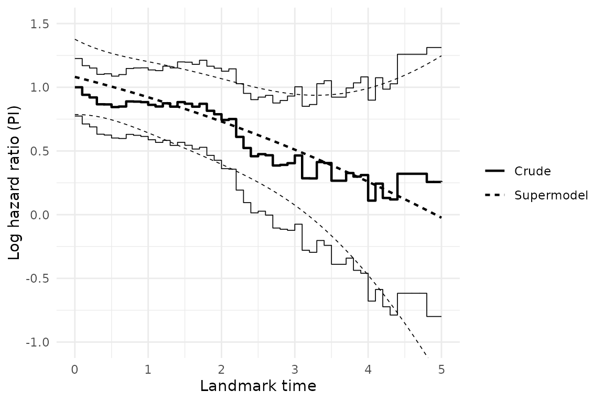

Overview
This vignette fits both a basic landmarking model and a
superlandmarking model to a cohort of ovarian cancer patients, the
dataset ova (see ?ova). The example is taken
from Section 7.2 (“Obtaining dynamic predictions by landmarking”) of van
Houwelingen HC, Putter H (2012), Dynamic Prediction in Clinical
Survival Analysis.
Landmarking produces a prediction from landmark time \(s\) up to horizon \(s + w\) by fitting a survival (typically Cox) model to the risk set still at risk at \(s\). Optionally, the dataset is administratively censored at \(s + w\). \[ h(t \mid x, s, w) = h_0(t \mid s, w) \exp(x^\top \beta_{LM}), \qquad s \le t \le s + w. \] Repeating this at a grid of landmark times \(s_1, \dots, s_L\) gives landmark-specific estimate of \(\beta_{LM}\) per landmark (the “Crude” estimates below).
Superlandmarking instead pools every landmark-specific dataset into a
single stacked superdataset, and lets \(\beta_{LM}\) vary smoothly with \(s\) via a basis expansion rather than being
re-estimated independently at each landmark: \[
h(t \mid x, s, w) = h_0(t \mid s, w) \exp\{x^\top \beta_{LM}(s)\},
\qquad
s \le t \le s + w,
\] \[
\beta_{LM}(s) = \sum_{j=1}^{m_b} \gamma_j f_j(s).
\] Fitting this is a single Cox model stratified on \(s\) (giving every landmark its own baseline
hazard \(h_0(t \mid s, w)\)) with
covariate \(\times f_j(s)\) interaction
terms for \(\hat\gamma\) — exactly what
the formula argument of fit_superlandmark()
specifies directly, via strata(LM) and
covariate:f_j(LM) terms.
The stratified baseline \(h_0(t \mid s, w)\) is only defined at the landmark times actually used for fitting. Instead, the following equation lets a single baseline hazard vary smoothly with \(s\) too: \[ h_0(t \mid s, w) = h_0(t) \exp\{\theta(s)\}, \qquad \theta(s) = \sum_{j=1}^{m_h} \eta_j g_j(s), \] for basis functions \(g_j\) standardized so that \(g_j(s_1) = 0\).
The outcome of interest is overall survival. Following Section 7.2 of van Houwelingen and Putter, the predictor is a single prognostic index summarizing a patient’s clinical risk factors at baseline, and the prediction window is \(w = 3\) years following each landmark time. The superlandmarking approach is used because the proportional hazard assumption does not hold here.
Example: ovarian cancer dataset
data(ova)
str(ova)
#> 'data.frame': 358 obs. of 8 variables:
#> $ tyears : num 0.967 2.666 1.055 0.682 4.721 ...
#> $ d : num 1 1 1 1 1 1 1 0 1 0 ...
#> $ Karn : num 9 10 10 9 10 8 10 10 7 10 ...
#> $ Broders: Factor w/ 5 levels "1","2","3","4",..: 5 4 3 2 2 3 3 1 4 1 ...
#> $ FIGO : Factor w/ 2 levels "III","IV": 2 2 1 1 1 1 2 1 2 1 ...
#> $ Ascites: Factor w/ 3 levels "absent","present",..: 2 2 2 2 3 2 3 1 1 1 ...
#> $ Diam : Factor w/ 5 levels "micr.","<1cm",..: 3 2 3 5 5 5 4 5 5 4 ...
#> $ id : int 1 2 3 4 5 6 7 8 9 10 ...ova contains 358 patients from two clinical trials of
combination chemotherapy for advanced ovarian cancer (Neijt et al. 1984,
1987). Every column other than the outcome and patient identifier is a
baseline covariate recorded once, at diagnosis:
-
tyears: time in years from diagnosis to death or last follow-up (the survival outcome’s time). -
d: event indicator,1= death,0= censored (the survival outcome’s status). -
Karn: Karnofsky performance score at diagnosis, recoded from 6 (\(\le 60\)) to 10 (100); higher is better. -
Broders: Broders’ histological tumour grade, a factor with levels"1"-"4"and"unknown". -
FIGO: FIGO disease stage at diagnosis, a factor with levels"III"and"IV". -
Ascites: presence of ascites at diagnosis, a factor with levels"absent","present","unknown". -
Diam: diameter of the residual tumour after surgery, a factor with levels"micr.","<1cm","1-2cm","2-5cm",">5cm". -
id: patient identifier.
There is no time-varying (longitudinal) covariate in this data set.
Static Cox model
fit_baseline <- coxph(
Surv(tyears, d) ~ FIGO + Diam + Broders + Ascites + Karn,
data = ova
)
coef(summary(fit_baseline))
#> coef exp(coef) se(coef) z Pr(>|z|)
#> FIGOIV 0.5035526 1.6545890 0.13628834 3.6947596 0.000220095
#> Diam<1cm 0.2466117 1.2796822 0.32279108 0.7639980 0.444868449
#> Diam1-2cm 0.6650962 1.9446776 0.32615708 2.0391899 0.041431080
#> Diam2-5cm 0.7845449 2.1914095 0.31486141 2.4917151 0.012712797
#> Diam>5cm 0.8361761 2.3075264 0.30389497 2.7515299 0.005931760
#> Broders2 0.5726751 1.7730037 0.24329916 2.3537899 0.018583114
#> Broders3 0.5200791 1.6821607 0.23442502 2.2185307 0.026518672
#> Broders4 0.3232976 1.3816765 0.27435834 1.1783771 0.238646301
#> Brodersunknown 0.6502278 1.9159773 0.26458607 2.4575286 0.013989668
#> Ascitespresent 0.2715428 1.3119870 0.15527944 1.7487361 0.080336647
#> Ascitesunknown 0.2054579 1.2280872 0.21279951 0.9654997 0.334294588
#> Karn -0.1732264 0.8409472 0.05395007 -3.2108656 0.001323358The fitted (centered) linear predictor of this static Cox model (prognostic index) is used to inform the landmarking and superlandmarking models.
Setting up the landmark analysis
PI is a single, time-fixed covariate (computed once from
baseline data), so this analysis does not require a longitudinal
submodel. LandmarkAnalysis() still requires
data_dynamic to be a named list of data frames, so an empty
placeholder is supplied.
x <- LandmarkAnalysis(
data_static = ova,
data_dynamic = list(
none = data.frame(id = integer(0), time = numeric(0), value = numeric(0))
),
event_indicator = "d",
ids = "id",
event_time = "tyears",
times = "time",
measurements = "value"
)Following van Houwelingen and Putter (2012), landmark times are chosen on an equidistant grid from \(s_1 = 0\) to \(s_L = 5\) years with distance 0.1, with a fixed prediction window \(w = 3\) years.
sL <- 5
w <- 3
landmarks <- seq(0, sL, by = 0.1)
x <- compute_risk_sets(x, landmarks)Crude landmarking
A separate Cox model is fitted at each landmark time, using
fit_survival().
x <- fit_survival(
x,
formula = Surv(event_time, event_status) ~ PI,
landmarks = landmarks,
horizons = landmarks + w,
method = "coxph"
)
# One fit per landmark, e.g. at s = 0:
coef(summary(x@survival_fits[["0-3"]]))
#> coef exp(coef) se(coef) z Pr(>|z|)
#> PI 1 2.718282 0.1152429 8.677325 4.051874e-18Superlandmarking
A single Cox supermodel is fitted using
fit_superlandmark() to the stacked superdataset, allowing
the effect of PI to vary smoothly with landmark time via
the basis \(f_1(s) \equiv 1, f_2(s) = s/s_L,
f_3(s) = (s/s_L)^2\) used in van Houwelingen and Putter (2012)
(Equation 7.2), with strata(LM) for the landmark-specific
baseline hazard.
x <- fit_superlandmark(
x,
formula = Surv(event_time, event_status) ~
PI + PI:I(LM / sL) + PI:I((LM / sL)^2) + strata(LM),
landmarks = landmarks,
w = w
)
fit_super <- x@superlandmark_fits[[length(x@superlandmark_fits)]]
summary(fit_super)$coefficients
#> coef exp(coef) se(coef) robust se z
#> PI 1.0813866 2.9487654 0.06012571 0.1507556 7.1731114
#> PI:I(LM/sL) -0.7218622 0.4858467 0.38186928 0.8807470 -0.8196022
#> PI:I((LM/sL)^2) -0.3834079 0.6815348 0.46018783 1.2498094 -0.3067731
#> Pr(>|z|)
#> PI 7.331212e-13
#> PI:I(LM/sL) 4.124429e-01
#> PI:I((LM/sL)^2) 7.590161e-01Displaying results
Hazard ratios estimated using both the crude landmarking and
superlandmarking approaches can be displayed using
plot_hazard_ratio().
plot_hazard_ratio(x, covariate = "PI", landmarks = landmarks, w = w, type = "both") +
ggplot2::coord_cartesian(ylim = c(-1, 1.5))